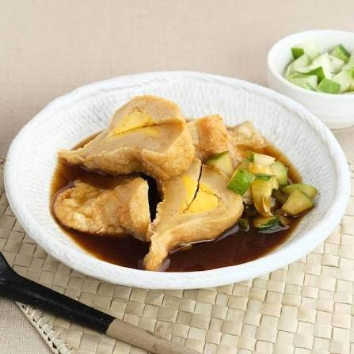
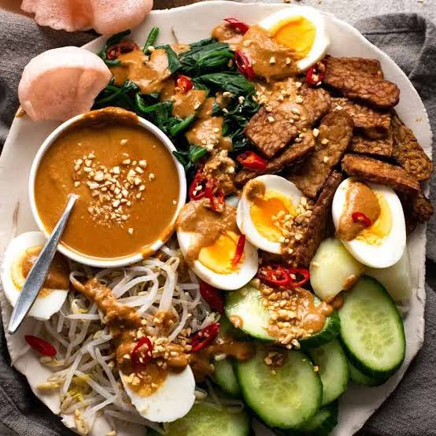

SUMATERA BARAT
Rendang
Daging sapi yang dimasak bersama santan dan rempah-rempah hingga menghasilkan rasa gurih dengan aroma yang khas.
PORTAL INFORMASI KULINER INDONESIA
Indonesia memiliki beragam makanan khas dengan cita rasa yang unik. Temukan cerita makanan tradisional, kekayaan rempah, dan kuliner populer dari berbagai daerah di Indonesia.
Jelajahi Kuliner →KEKAYAAN BUDAYA INDONESIA
Kuliner Nusantara merupakan bagian dari kekayaan budaya Indonesia. Setiap daerah mempunyai makanan khas dengan bahan, bumbu, dan cara memasak yang berbeda. Keunikan tersebut menjadikan makanan Indonesia memiliki banyak pilihan rasa.
Melalui website ini, pengunjung dapat mengenal berbagai makanan tradisional, mengetahui asal daerahnya, dan mempelajari keunikan kuliner yang diwariskan dari generasi ke generasi.
JELAJAHI BERBAGAI DAERAH
Berikut beberapa makanan khas Indonesia yang terkenal dengan rasa dan ciri khasnya masing-masing.
SUMATERA BARAT
Daging sapi yang dimasak bersama santan dan rempah-rempah hingga menghasilkan rasa gurih dengan aroma yang khas.

SUMATERA SELATAN
Olahan ikan dan tepung sagu yang disajikan dengan kuah cuko bercita rasa manis, asam, dan pedas.

YOGYAKARTA
Nangka muda yang dimasak dengan bumbu dan santan sehingga memiliki cita rasa manis yang khas.

KULINER INDONESIA
Potongan daging ayam yang dibakar dan disajikan dengan bumbu kacang atau kecap.
PILIHAN FAVORIT
Beberapa hidangan berikut sering menjadi pilihan masyarakat karena rasa dan keunikannya.

Hidangan berkuah dengan kaldu, ayam, dan rempah yang memberikan rasa gurih dan aroma harum.

Olahan nasi dengan bumbu pilihan yang dapat ditambahkan telur, ayam, sayuran, dan pelengkap lainnya.

Perpaduan sayuran, tahu, tempe, dan bahan pelengkap yang disajikan dengan bumbu kacang.

Hidangan khas Bali dengan bumbu rempah yang kuat dan cara pengolahan tradisional.
CERITA DAN INFORMASI
Baca informasi mengenai makanan tradisional, sejarah kuliner daerah, bahan makanan khas, dan keunikan cita rasa Indonesia.
Baca Berita Kuliner →GALERI MAKANAN
Berbagai hidangan khas Indonesia dengan warna, bentuk, dan cita rasa yang beragam.

Sup daging dengan kuah hitam khas Jawa Timur.
Hidangan berkuah dengan bumbu rempah.
Masakan khas Bali yang kaya akan rempah.
Sayuran dengan saus kacang yang gurih.
WARISAN KULINER INDONESIA
Makanan tradisional bukan hanya tentang rasa, tetapi juga menyimpan cerita, kebiasaan, dan identitas masyarakat di setiap daerah.
Dengan mengenal dan mencintai kuliner lokal, kita ikut menjaga warisan budaya Indonesia agar terus dikenal oleh generasi berikutnya.
HUBUNGI KAMI
Punya cerita tentang makanan khas daerahmu? Bagikan informasi dan pengalaman kuliner untuk memperkenalkan kekayaan rasa Indonesia.
Jelajahi Berita Kuliner →